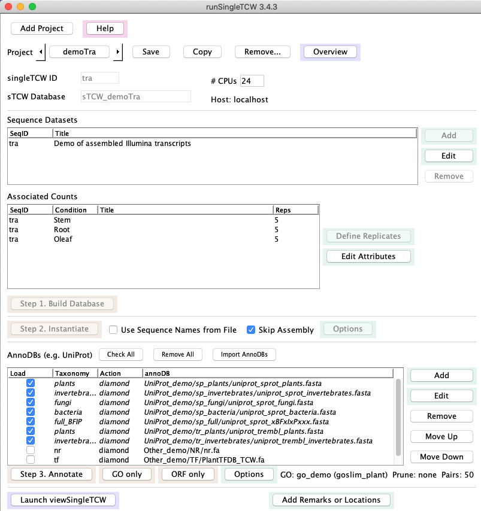

1. Build Database
- The input may be transcripts with optional read counts, proteins with optional spectral counts,
or sequences to be assembled such as Sanger ESTs, 454 reads, and/or transcript libraries.
- The Add window allows you to specify the sequence dataset (fasta file)
along with its conditions (e.g. tissue, treatment, etc),
which will be listed under Associated Counts on the main window.
- If there are replicates, you may define them with the Define Replicates window.
2. Instantiate
- Skip Assembly - the sequences can be instantiated with no assembly.
- Assembly - the sequences can be assembled. If Read sequences (i.e. ESTs) are mixed with
transcripts that have read counts, the EST dataset 'counts' for the contig will be the number
of ESTs in the given contig, and the transcripts will retain their counts from the input.
3. Annotate
- Use runAS to download and format UniProts and the GO databases; these are input to (b) and (c).
- Add one or more databases to search against, which can be protein or nucleotide.
- In the Options window, define the GO database
4. Add Remarks and Locations
Remarks and Locations (i.e. chromosome, start, end, strand) can be added to sequences and queried in the viewSingleTCW.
|

|
{kind=link}


{kind=link}